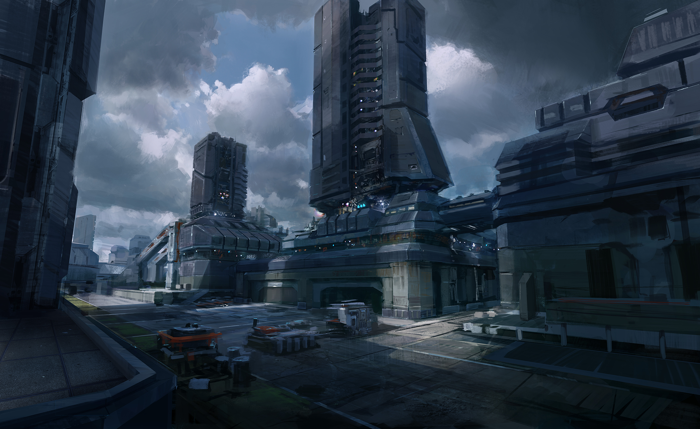

Upwell Structures are large player-made structures. They provide services and docking facilities which
in many ways mirror those provided by NPC stations, but they differ somewhat in their mechanics. In some
they are more useful than NPC stations, but on the other hand they can be destroyed.
In high- and low-security space, Upwell structures are useful tools for corporations; in null-security
space and even more so in wormholes, they can be essential bases and semi-permanent homes for players.
Construction
Much like anything else, Upwell structures are manufactured out of sub-components. Structure components
can be either bought from the market, built in stations or in Component Assembly Arrays. The final
assembly of the structures can take place in either a station or Equipment Assembly Array. Structure
components are distinguished by their usage of a good bit of Planetary Industry materials in their
construction.
Upwell Structures
Citadels
Citadels are Upwell Structures meant to be used as operation bases. They receive bonuses to combat rig
effectiveness, market service fuel usage and cloning bay fuel usage. Citadels also have the shortest
vulnerability durations and strongest combat options making them easier to defend.
The three
citadels are Astrahus (medium), Fortizar (large) and Keepstar (extra large). They have exactly
same structure bonuses so the difference is only how many things they can have fitted and how much of a
status symbol they are.
There is also a special Upwell Palatine Keepstar extra-large citadel. This citadel has ridiculously high
material requirements, estimated at around 100 Trillion ISK and only one can be deployed at any given
time. As of 2022 no one has anchored a Palatine Keepstar, however the primary structure on the
Singularity test server in M-OEE8 -- the combat testing system -- is a Palatine owned by CCP.
Founded on the tenets of patriotism and hard work that carried its ancestors through hardships on an
inhospitable homeworld, the Caldari State is today a corporate dictatorship, led by rulers who are
determined to see it return to the meritocratic ideals of old. Ruthless and efficient in the boardroom
as well as on the battlefield, the Caldari are living emblems of strength, persistence, and dignity.
History
The home planet of the Caldari is Caldari Prime in the system of Gallente. The Gallente
prime, the home planet of the Gallente, is located in the same system.
The Caldari were once part of the Gallente Federation. Soon after the technology for interstellar travel
was rediscovered in Gallente Federation the Caldari corporations started secret colonization of their
own. Once the Gallente Federation found out about these colonies the Federation of course demanded that
they are put under the authority of the Federation. The Caldari corporations declined. The relationships
were tense and Caldari Prime was put under blockade. Eventually, Caldari partisans in Caldari Prime
sabotaged an underwater Gallente city. The Gallente retaliated with orbital bombardment and the Gallente
- Caldari war began. The war lasted for a hundred years until the newly formed CONCORD was finally able
to negotiate peace between the two factions. Caldari Prime is still under Gallente control to this day
and the relationships between Gallente and Caldari are very bad. Before the founding of the state, the
Caldari were not a singular entity.
Like their Gallente neighbors, they were composed of different races on different continents across
Caldari Prime, although the bulk of the population was located on the Tikiona continent.
Tikiona was united between AD 17453 and AD 20988 under the Raata Empire, with existing ethnicities at
the time organized into political entities in the form of houses.

Megacorporations
The Caldari State is made up of eight great megacorporations which are the CBD Corporation, Hyasyoda
Corporation, Ishukone Corporation, Kaalakiota Corporation, Lai Dai Corporation, Nugoeihuvi Corporation,
Sukuuvestaa Corporation, and Wiyrkomi Corporation. Together they own more than 90% of all property
within the State. Each of the corporations is made up of thousands of companies of various sizes and
various sorts, ranging from mining companies to police companies.
Since there is no single unified government, each corporation rules their territory, like their own
kingdom, with little interference from the other corporations. Competition, efficiency, and market share
are more important to the corporations than the accumulation of wealth.
Each corporation is made up of thousands of smaller companies, ranging from industrial companies to law
firms. All land and real estate are owned by a company that leases it to the citizens. They control and
rule every aspect of society and government. Each megacorporation handles its own policing. Although
this gives the corporations dictatorial powers, they are just as bound by Caldari customs and laws as
the individual, and the fierce, continual competition between the corporations ensures a healthy,
consumer-based social environment, which benefits everyone. As a result business for the good of the
individual rather than the good of the many is something totally alien to the Caldari.
Full IntroductionWhile the "Into the Abyss" expansion adds a number of other changes, this new
Triglavian faction is the primary focus of this page, with the related Abyssal Deadspace complexes
on
top.
The core source of most of the Triglavian content is the Abyssal Deadspace complexes, which are
unique
complexes in a separate and isolated area of space for which only one person can participate in at a
time. These sites are the source for the BPCs used to build Triglavian ships, also called Precursor
vessels; these sites also provide "keys" to access other complexes, blueprints for Entropic
Disintegrator modules, Abyssal Deadspace modifier items and some apparel items.
Precursor vessels are the only ships that can use the Entropic Disintegrator modules which have a
different setup than the conventional weapon systems most EVE players are familiar with. They focus
on
an armor tank with emphasis on utility; much like the Society of Conscious Thought vessels, these
hulls
tend to be somewhat mediocre but can excel in very specific situations. They are specifically
equipped
to use the Entropic Disintegrator weapon system: all of the hulls have only one turret slot yet have
two
or more utility high slots, possibly to synergize with the remote armor repair bonuses on each hull.
Entropic Disintegrators are a curious weapon system which has some parallels to laser systems, with
an
interesting but rather specific attribute whereby the damage modifier of the weapon system increases
with each shot fired.
Abyssal Mutaplasmids are special modifier elements which are designed to modify certain attributes
of
select modules. An example would be a Microwarpdrive: the mutaplasmid can boost or decrease the
velocity
bonus, the powergrid requirement, the signature radius modifier or the activation cost. This allows
for
interesting concepts in ship choices but also threatens the stability of the module metagame.
Further details on each of these concepts will be explored below.